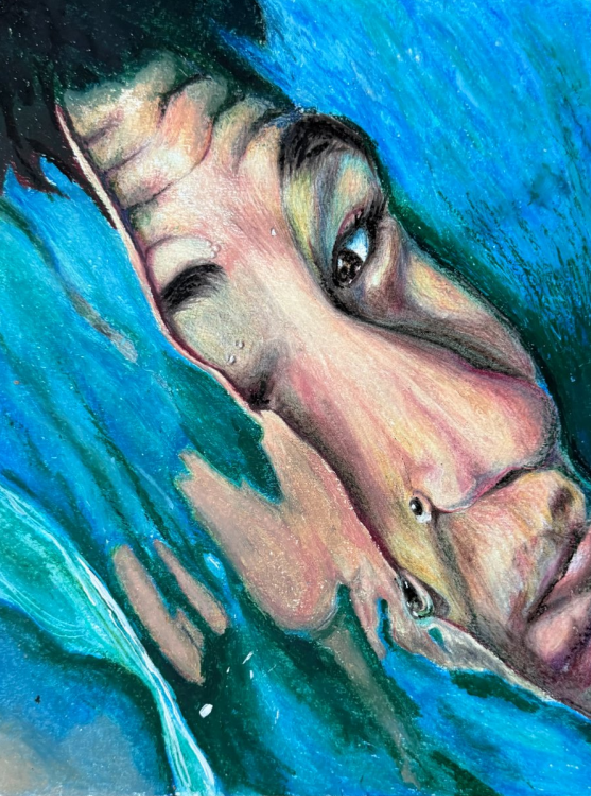
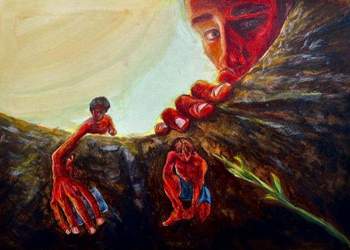
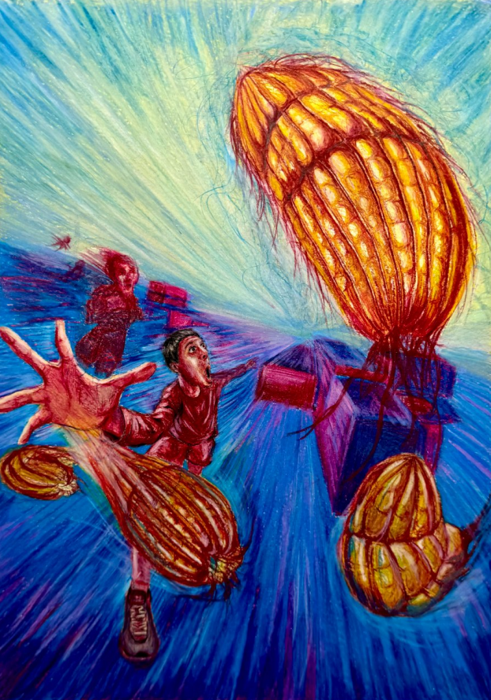
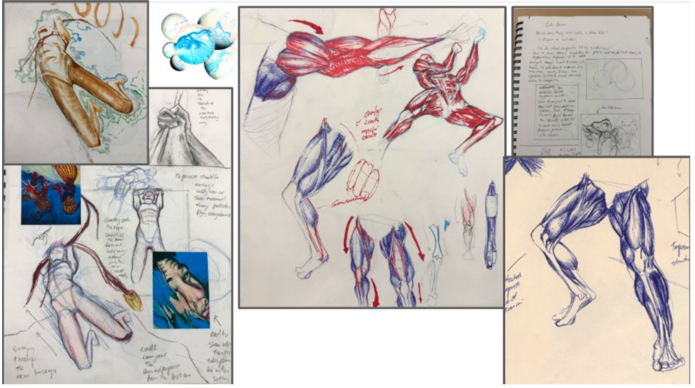
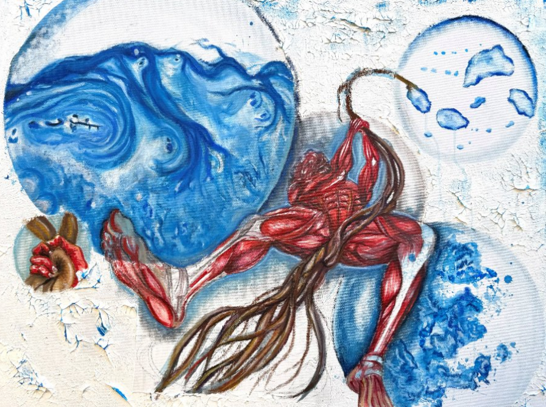

AP Art Portfolio
Alan
Selected work and studies
Work
Selected pieces





About Alan
Moving from landlocked Nepal to lush FL wetlands, I watched microorganisms roll & twist under a lens. Consumed by what I examine & need to document my exploration of microscopic life. Used microscope as tool & inserted 'Alan' into slide as a newcomer, suspended among organisms he cannot comprehend. He investigates the series of fleeting moments of discovery, hesitation, and obsession. I positioned him alongside critters & patterns on my slides. I invite the viewer to wonder into the unexpected w me, finding that intentional observation can expand the smallest detail into a profound discovery.